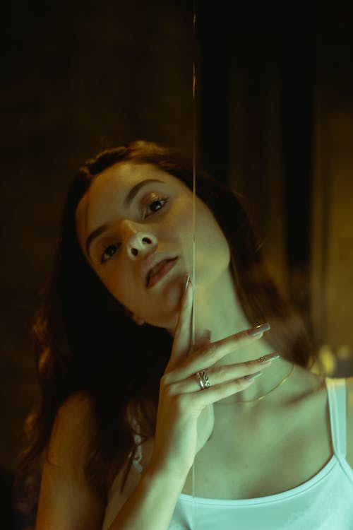
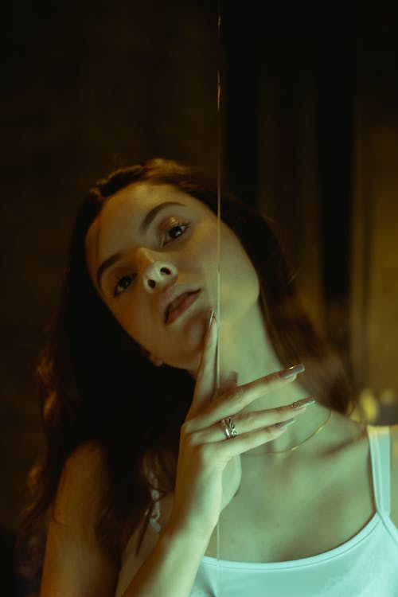

between
reality
&
Dream
shots that will change your mind

shots that will change your mind
Photography has become a big part of almost every element of our lives
It become widespread and diverse but we know that this is still a real from of art and magic
explore works
 

This series is excellently showing that ordinary portrait photography still can be inspiring for you
Check the shots of beautiful Caroline in hat with red and green light


Beautiful dance of Hanna in neon lights with retro effect. Pink lights, pretty women and sensuality
Inspiring vibes and invisible beautiful soul on this shots.


Retro nostalgia can be sweet and sour at the same time. Christina helped us to make photos, that will give you this feelings
Drop in past times with this collection of 80's styled photos.